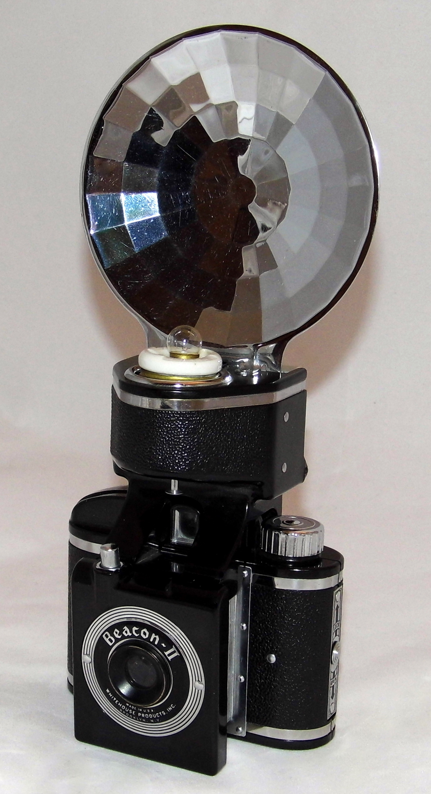

KNOWLEDGE / MOTION
SHOWCASE V2 · 32.28s
一篇文案 → 一支知识视频？
DOC · 文案
FILM · 知识视频
ARG SKELETON · 论证结构
论点
证据
语义分镜
每镜 6–8s
一个意思
直接画
找证据
photo · 复古胶片相机

REAL · VINTAGE CAMERA
最后 · 流水线
配音
字幕
合成
文案
→
成片
说服力
结构
特效